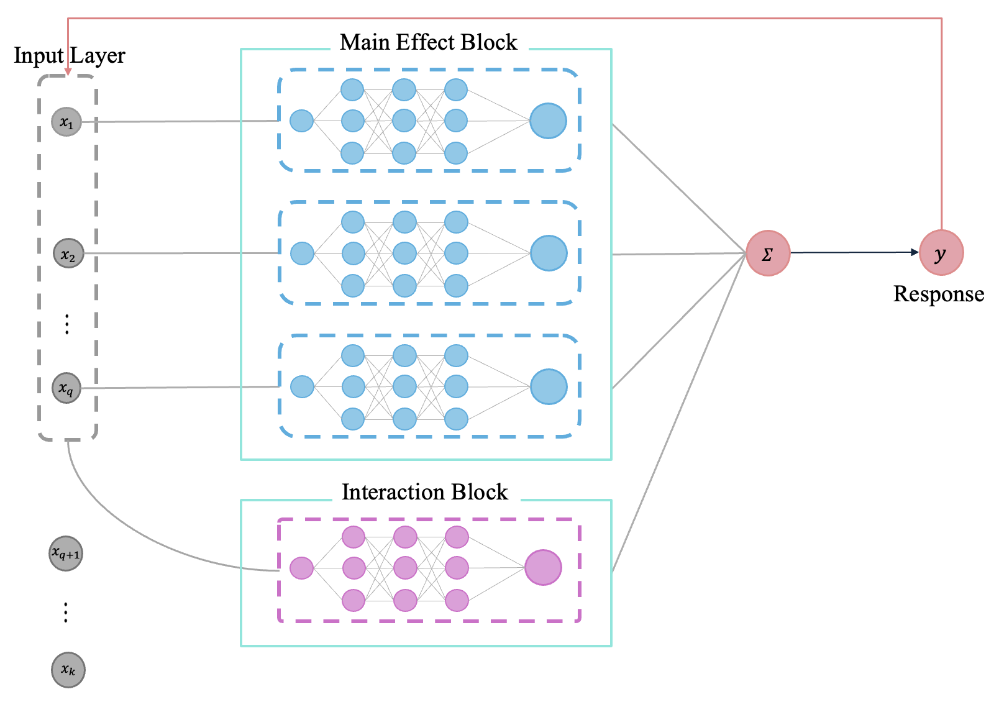
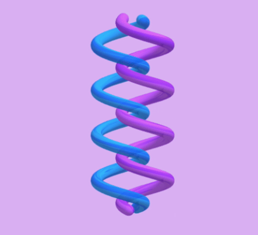
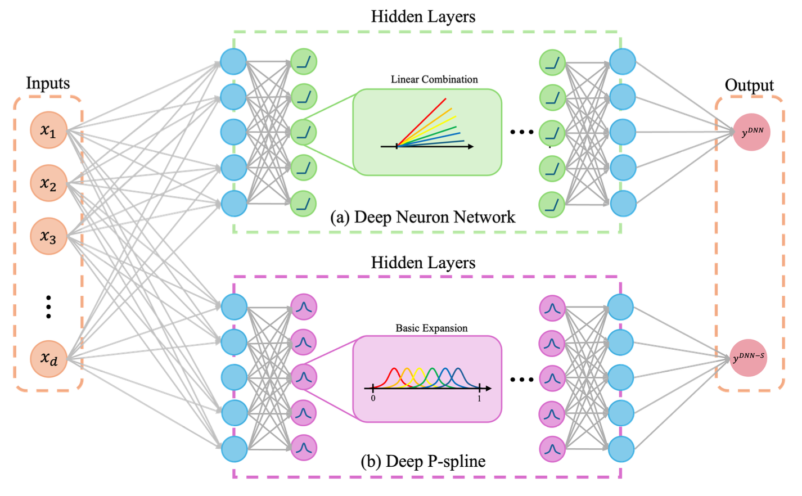
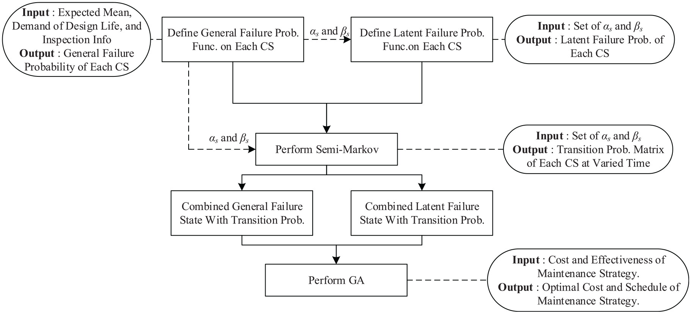

I am eager to learn and join exciting AI and uncertainty qualification projects. Please do not hesitate to reach out for collaboration!!

 Sparse Deep Additive Model with Interactions: Enhancing Interpretability and Predictability
Noah Yi-Ting Hung, Li-Hsiang Lin, Vince D. Calhoun; (Submitted.)
arXiv 2025 Recent advances in deep learning highlight the need for personalized models that can learn from small or moderate samples, handle high-dimensional features, and remain interpretable. To address this challenge, we propose the Sparse Deep Additive Model with Interactions (SDAMI), a framework that combines sparsity-driven feature selection with deep subnetworks for flexible function approximation. Unlike conventional deep learning models, which often function as black boxes, SDAMI explicitly disentangles main effects and interaction effects to enhance interpretability.
PDF
 arXiv
BibTeX
arXiv
BibTeX

Deep P-Spline: Theory, Fast Tuning, and Application
Noah Yi-Ting Hung, Li-Hsiang Lin, Vince D. Calhoun; (Under Revison.)
arXiv 2025 We introduce a difference penalty that automates knot selection, thereby simplifying the complexities of neuron selection. We name this method Deep P-Spline (DPS). This approach extends the class of models considered in conventional DNN modeling and forms the basis for a latent variable modeling framework using the Expectation-Conditional Maximization (ECM) algorithm for efficient network structure tuning with theoretical guarantees.
PDF
arXiv
BibTeX

Semi-Markov process-driven maintenance scheduling for Tainter gate system considering multiplelimit states
John Thedy, Kuo-Wei Liao, Noah Yi-Ting Hung; (Accepted.)
JSHM 2024 Adopting the Semi-Markov Process, which accommodates non-exponential distribution of state durations, to formulate optimal maintenance strategies for Tainter gate systems that are noted for their prolonged dormancy and significant operational uncertainties.
PDF
BibTeX

 Noah Yi-Ting Hung
Noah Yi-Ting Hung